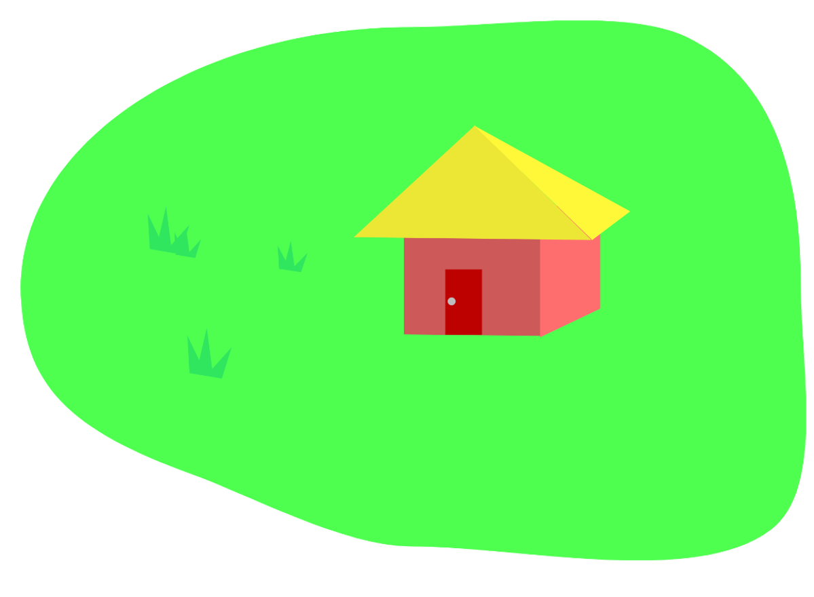

注意看!这是一个火山怪兽,它没有攻击力,杀死它可以掉落很多的冰块.
在这个游戏中,有坐标点这一个概念,只有在玩家到达某一个坐标点时,才可以对某个NPC进行交互.
下面将一一列举坐标点(按Z键交互);
树精长老:99,-9
商人:117,-9
攻击火山怪兽(只有在购买了树精小兵才可以攻击):270,-9
树精:-18,6
家:21,-9
枯树怪:117,198
沙漠水井:105,216
注意事项:
当你的坐标达到-120时,会掉入虚空
在超过200的坐标时,会进入敌人的领地,这个时候如果你买了树精小兵的话就可以按下E键攻击了
在金币大于10时,走到枯树怪的坐标点有惊喜
到沙漠水井的坐标点,按下Z键有惊喜
左上角橙色的字为坐标
按下w d s a 对应按键控制移动,长按疾跑,暂时不支持手机端玩家
本游戏现已关闭.
开始游戏
